CKF Foundation
brand sheet
Two simple marks, four wordmark styles (one per concept), icons and the fonts used by each concept. All files are vector SVG; type in the wordmarks is converted to outlines, so no font is needed to use them. PNG exports are in assets/brand/png/.
Logo A · The swallow (supplied by CKF, traced to vector)


Logo B · Three pillars in an arch (new)
An open doorway holding three rising pillars: Education, Health, Opportunity. Plain, architectural, and clear at small sizes.


Wordmarks (outlined, stacked CKF / FOUNDATION)
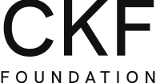

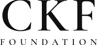

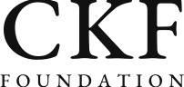


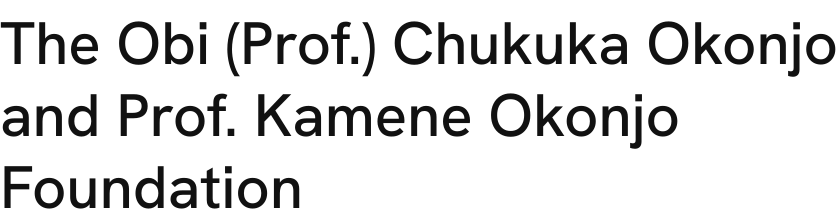

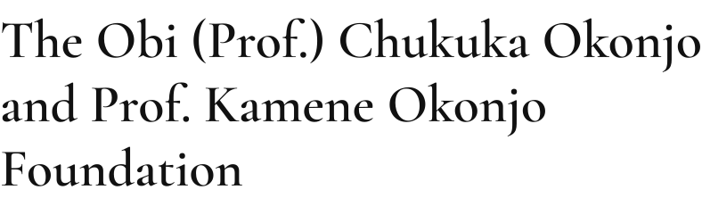

Lock-ups (mark + wordmark)
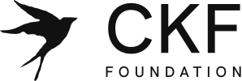



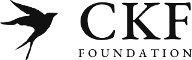



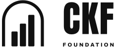

All 16 lock-ups (2 marks × 4 wordmarks × dark and light) are in assets/brand/.
Icons (favicon, app and social avatars)
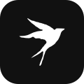
Swallow · black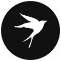
Swallow · round avatarFonts used in each concept
1 · Canopy
Hanken Grotesk 300, 400, 500, 600. A light geometric-leaning grotesque in the spirit of Hempel Foundation's custom face, but not that font.
2 · Roots
Cormorant Garamond 400, 500, 600, 500 italic (display) + Inter 400, 500, 600 (body).
3 · Clearing
Instrument Sans 400, 500, 600 (headlines, body) + EB Garamond 400, 500 (wordmark and pull quotes).
4 · Momentum
Anton 400 (display) + Archivo 400, 500, 700, 800 (body, UI).
All fonts are open source (SIL Open Font License) and self-hosted from assets/fonts/. Logo A is traced from the swallow silhouette supplied by CKF.